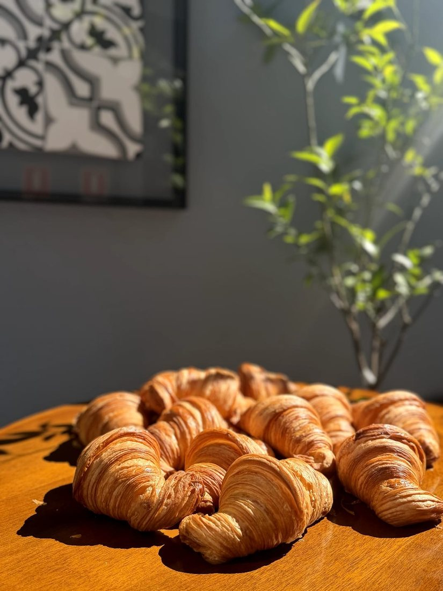
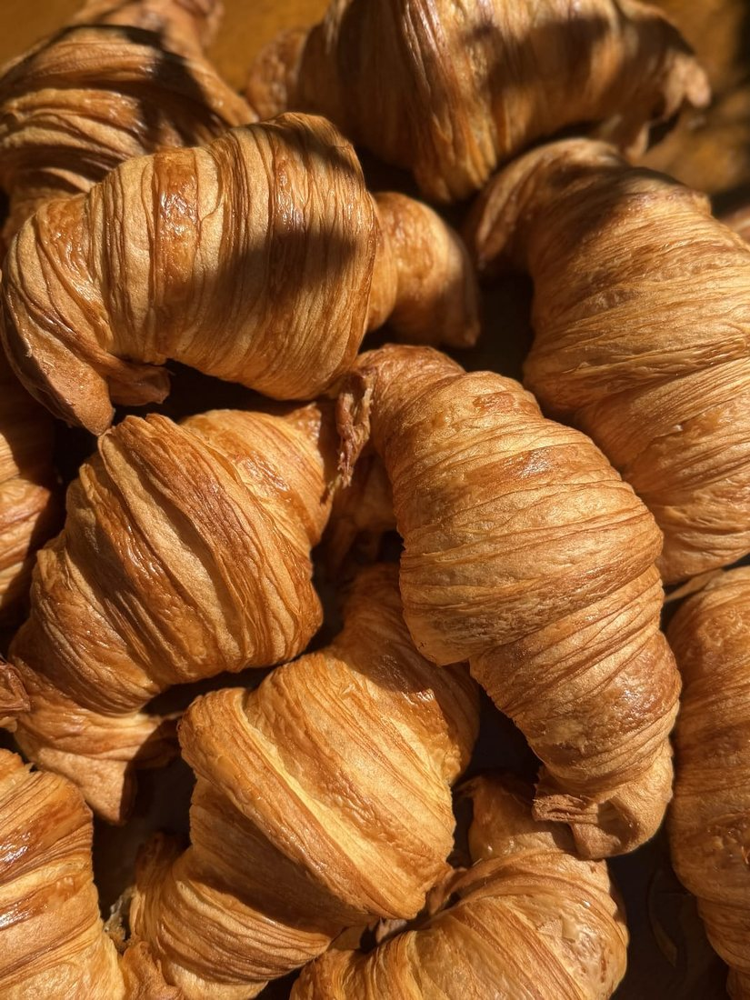
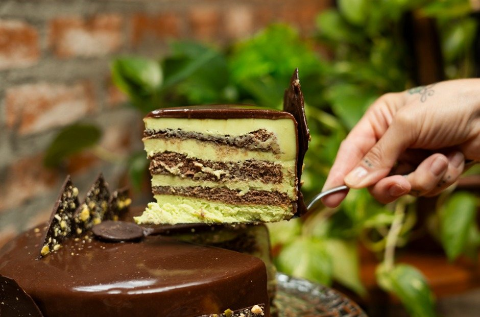
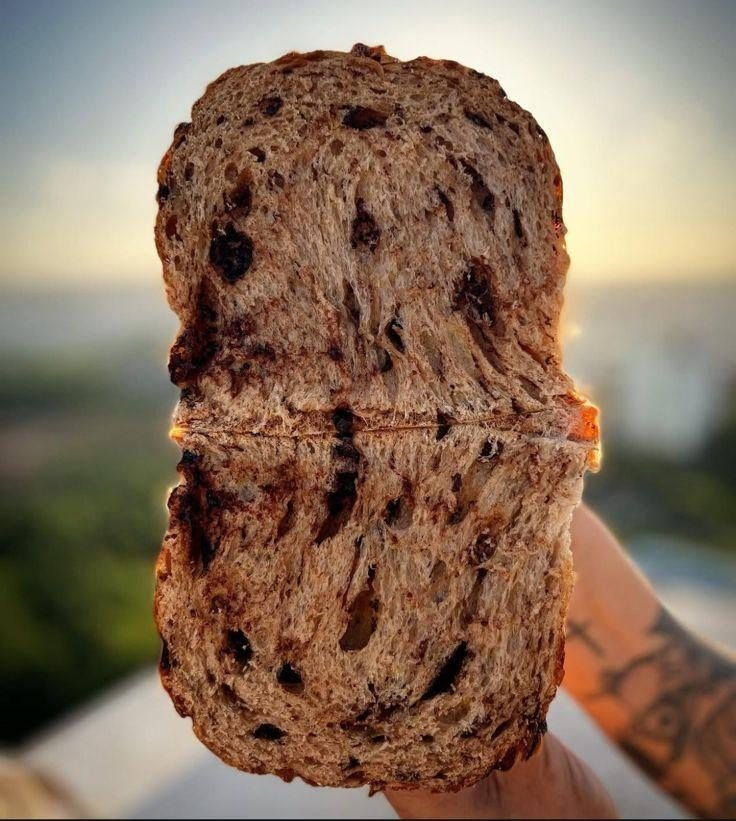
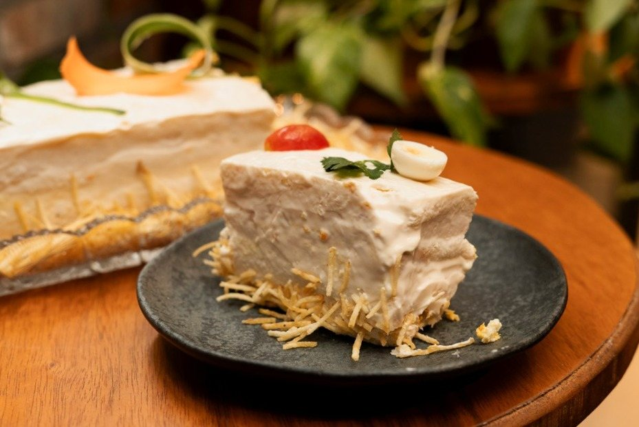
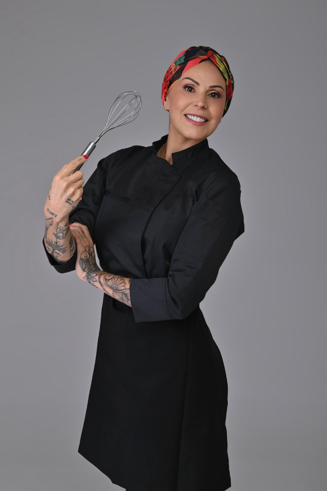
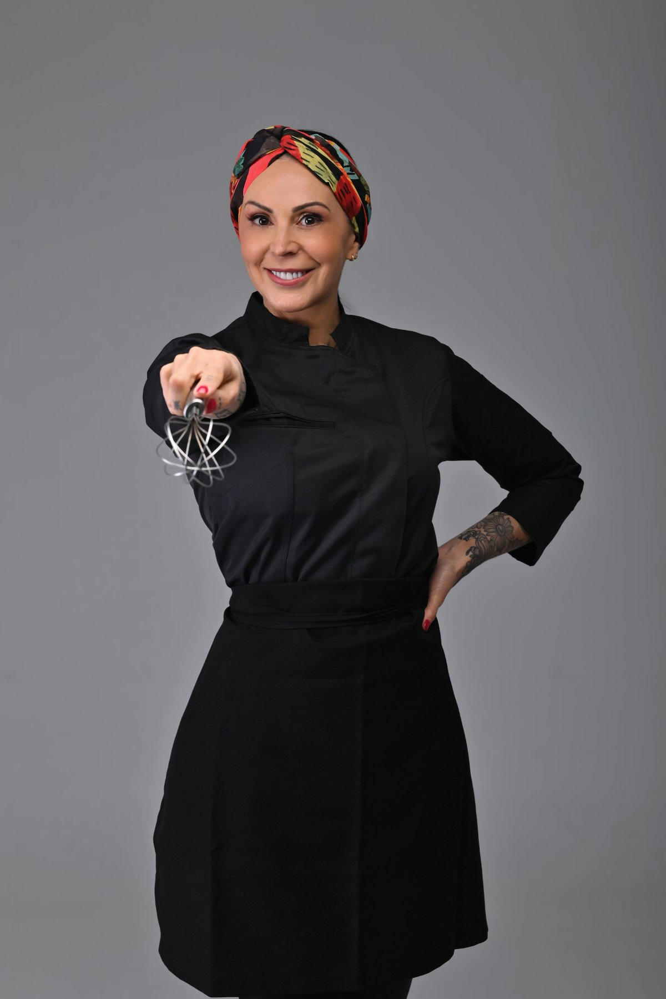
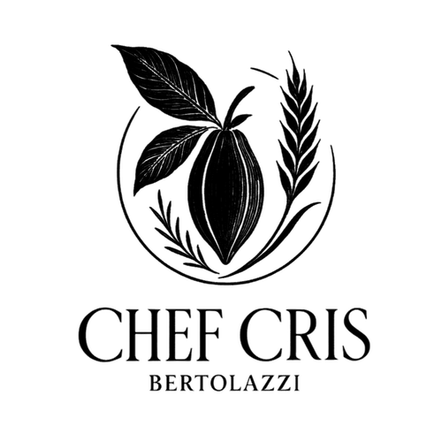
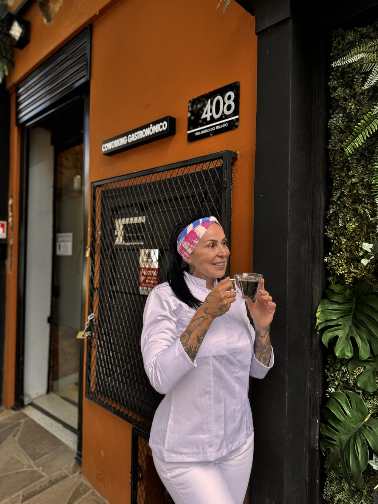

Trajetória marcada pela precisão técnica, unindo conhecimento acadêmico à sensibilidade artística para criar experiências memoráveis à mesa.

Antes dos fornos e das bancadas de mármore, Cris Bertolazzi construiu uma carreira sólida no Direito e na Matemática — bacharelados que moldaram um raciocínio analítico estruturado e um compromisso inegociável com a precisão.
Essa base técnica encontrou, mais tarde, sua expressão mais sensível na cozinha. A transição para a alta gastronomia trouxe consigo o mesmo rigor da magistratura e a mesma lógica da matemática, agora aplicados à arte de panificação, chocolataria e confeitaria fina.


Bacharelados em Matemática (1991) e Direito (2001), consolidando um raciocínio analítico estruturado. Pós-graduação em Metodologia do Ensino e especializações em Direito Penal e Previdenciário, com atuação na Magistratura (AJURIS) — o rigor técnico que hoje orienta a gestão gastronômica.
Pós-graduação em Patisserie e Boulangerie (2022), com especialização focada no refinamento técnico de pães e doces finos, unindo o domínio das bases clássicas brasileiras à aplicação de técnicas contemporâneas.
Imersão intensiva em Pasticceria e Massa Fresca Artesanal na capital gastronômica da Itália. Certificação como especialista em produtos sem glúten e formação em Praline Design — a arte do chocolate italiano aplicada a bombons de design sofisticado.
Conclusão completa dos níveis I ao V, consolidando o domínio técnico tradicional francês. Maestria em viennoiserie, massas folhadas e fermentação avançada, além da criação de sanduíches exclusivos unindo técnicas europeias a ingredientes premium.
Formação completa em Chocolataria I a III e Caramelos com Renata Penido. Técnicas avançadas de "Different Angle" com Andrey Dubovick, focadas em estética disruptiva. Aperfeiçoamento internacional ao lado dos mestres Ramon Morató e Luis Amado.
Formação profissional em Panificação e Pizzas na EGAS, com domínio de pães artesanais de alta hidratação. Mentoria com Mia Vasconcelos em massas artísticas e gastronomia vegana criativa, além de especialização em Sourdough.
Foco em eventos de alto padrão unindo saúde e sofisticação. Exploração da Fusion Cuisine e da cozinha mexicana autêntica, com domínio em tapas, saladas gourmet e a meticulosa estética do empratamento artístico.
Criação de Number Cakes, tortas especiais, brownies, cookies e a sofisticação dos bolos caseiros — doces finos para celebrações exclusivas com design exclusivo e técnicas francesas para eventos de luxo.
Vencedora do Prêmio Boulangerie France Brasil (Junho/2026), reafirmando a maestria na panificação clássica francesa.
Reconhecida por sua excelência técnica e sabor autêntico na panificação tradicional.
Reconhecimento de alto padrão em viennoiserie, posicionando suas dobras folhadas entre as melhores.
Consagração pela maestria técnica e respeito aos processos clássicos franceses.
Técnicas de alta gastronomia francesa e italiana, traduzidas em aulas práticas e diretas. Aprenda no seu ritmo, com o mesmo rigor técnico que consagrou a Chef Cris nos maiores centros gastronômicos do mundo.
Novos cursos de alta panificação e confeitaria estão a caminho — com a mesma técnica que rendeu à Chef Cris o Prêmio Boulangerie France Brasil. Acompanhe o anúncio em primeira mão no Instagram.
Acompanhar Novidade no Instagram →Capacitação técnica para alta gastronomia e excelência operacional das equipes.
Desenvolvimento de menus exclusivos e autorais para cada projeto gastronômico.
Consultoria para eventos corporativos e sociais de alto padrão e luxo.
Mais do que uma cozinha, um espaço para criar. A Casa 408 é o coworking idealizado pela Chef Cris — um ambiente pensado para reunir criatividade, gastronomia e novos negócios sob o mesmo teto, com a mesma curadoria e cuidado com os detalhes de tudo que ela assina.
Conhecer a Casa 408